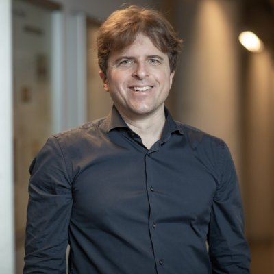
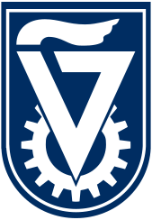
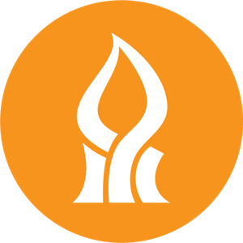
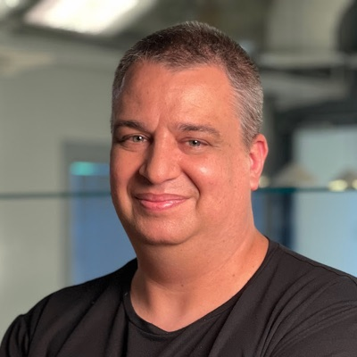
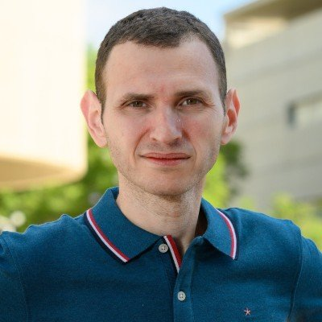
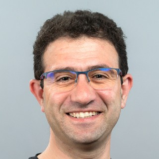
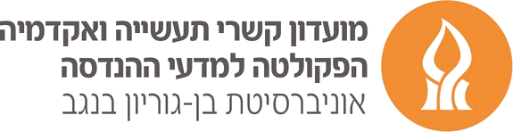
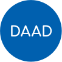

Keynote
Stefan Schmid
Professor
TU Berlin
From Topology-Aware to Fabric-Adaptive: Rethinking Datacenter Networks for AI




AI has become a systems problem. Training and serving today's models is limited less by algorithms than by the machines and networks underneath them: interconnect topology, congestion, scheduling, memory and energy.
NetSysAI brings together researchers and industry engineers working at that boundary, from datacenter fabrics and self-adjusting networks to efficient models and hardware-aware learning, for a day of talks and discussion in the Negev.

Stefan Schmid
Professor
TU Berlin
From Topology-Aware to Fabric-Adaptive: Rethinking Datacenter Networks for AI
Eitan Zahavi
Distinguished Architect
NVIDIA
Computing and Networking for Cloud and AI-Factories

Asaf Aharoni
Distinguished Software Engineer
Talk title TBA
Erez Sabbag
Principal Engineer
Amazon · Annapurna Labs

Chaim Baskin
Assistant Professor | Fundamental Research Lead
BGU · Decart
What to Keep and How to Remember: Towards Efficient World Models

Mark Silberstein
Professor
Technion
Large-Scale Optics-Only Network for AI Model Training with Low-Radix Optical Switches
Artificial intelligence is transforming the way we design datacenter networks. As AI clusters scale to thousands of accelerators, their performance increasingly depends on communication, and in particular on collective operations such as AllReduce and All-to-All. At the same time, modern datacenter fabrics offer capabilities that conventional collective communication does not yet fully exploit: multiple simultaneous communication ports, heterogeneous interconnects, and increasingly, dynamically reconfigurable optical connectivity.
In this talk, I will argue that exploiting these capabilities requires us to move from topology-aware to fabric-adaptive collective communication. I will first discuss multiport networks and present Trivance, a recent approach to latency-efficient AllReduce that systematically exploits parallel communication opportunities. I will then turn to reconfigurable optical networks, where an even more fundamental opportunity arises: rather than merely optimizing communication over a given topology, we can jointly adapt the communication schedule and the network topology itself.
These results point toward a broader vision for AI datacenters in which collective communication and the underlying network are no longer optimized independently. Instead, the network becomes an active resource that adapts to the communication structure of AI workloads. I will discuss recent progress toward this vision, the algorithmic and systems challenges that remain, and opportunities for a new generation of adaptive AI datacenter fabrics.
Stefan Schmid is a Professor at the Technical University of Berlin, Germany. MSc and PhD at ETH Zurich, Postdoc at TU Munich and University of Paderborn, Senior Research Scientist at T-Labs in Berlin, Associate Professor at Aalborg University, Denmark, Full Professor at the University of Vienna, Austria, and sabbatical as a Fellow at the Israel Institute for Advanced Studies (IIAS), Israel. Stefan Schmid received the IEEE Communications Society ITC Early Career Award 2016, an ERC Consolidator Grant 2019, and an ERC Proof-of-Concept Grant 2026. He is the Editor in Chief of the EATCS Bulletin, was a co-chair of ACM Sigmetrics and ACM MobiHoc, and served as local organizer of DISC and IEEE NetSoft.
Interactive world models must do more than generate plausible visual sequences. They must preserve information across time, recover relevant details when needed, and remain computationally efficient as interactions grow longer. Keeping the entire history in context is costly, while compressing it risks discarding information needed later. This raises a fundamental question: what should a model remember, and how can it use that information efficiently?
In this talk, I will explore how learning what to preserve and what to compute can address these challenges. I will present recent work on compact visual representations for efficient video retrieval, learned spatial memory for consistent generation across long trajectories, and phase-aware diffusion distillation that allocates model capacity according to changing computational needs. Together, these works illustrate a common principle: efficient models should preserve useful information and allocate computation according to what each task requires, rather than processing everything uniformly.
Finally, I will briefly discuss how these ideas could contribute to more persistent and efficient world models, highlighting open questions around adaptive memory, changing environments, and computation that benefits from accumulated experience.
Chaim Baskin is an Assistant Professor (Senior Lecturer) in the School of Electrical and Computer Engineering at Ben-Gurion University of the Negev, where he heads the INSIGHT Lab and serves as Academic Head of Computing. At Decart AI, he leads fundamental research and the Robotics Lab and oversees academic research and partnerships.
His research spans machine learning and computer vision, with an emphasis on multimodal foundation models, world models, geometric deep learning, and efficient and robust AI. His current work explores real-time generative models and embodied intelligence, connecting perception, prediction, and planning, alongside research on AI safety and computational efficiency.
Previously, he was a Research Scientist at Intel Labs and a Research Associate and Principal Investigator at the Technion. He holds a PhD in Computer Science and an MSc in Electrical Engineering from the Technion, and a BSc in Electrical Engineering from Braude College.
He serves as an Action Editor for Transactions on Machine Learning Research (TMLR) and has served as an Area Chair for conferences including NeurIPS, ICLR, and WACV.
ML and HPC workloads now depend on the network as much as on compute — yet standard transport layers were never designed for the cloud, and react poorly to the congestion and link failures that are routine at datacenter scale. This talk explores AWS's answer: SRD (Scalable Reliable Datagram), a multipath transport with latency-based congestion control, implemented natively in the Nitro System. We'll see how it slashes tail latency and recovers from failures in microseconds, and how it powers EFA and massive Trainium2/3 training clusters like Project Rainier.
Erez Sabbag is a Principal Engineer at Annapurna Labs (Amazon Web Services) in Haifa, where he has worked since 2018. Before that, he developed algorithms for flash and NAND storage devices, including error-correcting codes, signal processing, compression and machine-learning methods, at Toshiba, Broadcom and DensBits Technologies (acquired by Broadcom), and he is an inventor on patents in this area. He holds a PhD and an MSc in Electrical Engineering from the Technion, both in information theory, where he also taught courses in digital image processing and information theory.
Machine learning training places immense demands on cluster networks, motivating specialized architectures and co-design with parallelization strategies. Recent designs incorporating optical circuit switches (OCSes) are promising, offering improved cost, power efficiency, and long-term bandwidth scaling than packet switches. However, most existing approaches rely on costly high-radix OCSes and/or combine them with packet switches to achieve competitive performance at scale. Unfortunately, high-radix OCSes are both expensive and slow to reconfigure, limiting both scalability and performance.
We propose Arrays of Cheap Optical Switches (ACOS), which bring application co-design directly to the structure of the reconfigurable fabric. Using low-radix OCSes as building blocks, ACOS supports the forms of reconfiguration needed in training clusters including topology selection, workload adaptation, and failure resilience. The cost of ACOS scales with supported topologies and adaptations rather than with port count, breaking past the scalability barriers of current specialized ML networks. We show through simulation and via our prototype that ACOS-based deployments match the performance of fully provisioned packet-switched networks when training state-of-the-art LLMs at scale, while delivering significant cost savings using existing off-the-shelf OCSes, with strong bandwidth scaling and a fraction of the power of bandwidth-equivalent packet switched networks.
Mark Silberstein is a professor in the Electrical and Computer Engineering Department at the Technion – Israel Institute of Technology, and the head of the Accelerated Computing Systems Lab. His research interests span a broad range of topics in computer systems, including OS, networking, computer architecture, and systems security. He recently spent a sabbatical in NVIDIA Networking, and got particularly excited about emerging networking technologies. He served as a PC co-chair in EuroSys’24 and ASPLOS’26.
Tentative Thursday, 19 November 2026. Invited talks are 40 minutes and student talks 20 minutes. Times may still change slightly.
| 09:30 – 10:00 | Registration, coffee & networking |
| 10:00 – 10:30 | Welcome, greetings and opening remarks BGU, DAAD and partners · Chen Avin (BGU) |
| Morning session | |
| 10:30 – 11:10 | Stefan Schmid · TU Berlin Keynote |
| 11:10 – 11:50 | Chaim Baskin · BGU · Decart |
| 11:50 – 12:30 | Title TBA Asaf Aharoni · Google |
| 12:30 – 13:15 | Lunch break DAAD information stand for short consultations |
| Afternoon session | |
| 13:15 – 13:55 | Computing and Networking for Cloud and AI-Factories Eitan Zahavi · NVIDIA |
| 13:55 – 14:35 | Erez Sabbag · Amazon · Annapurna Labs |
| 14:35 – 15:15 | Mark Silberstein · Technion |
| 15:15 – 15:45 | Coffee break DAAD information stand for short consultations |
| Graduate student session Short talks by MSc and PhD students | |
| 15:45 – 16:05 | Student talk 1: title TBA Speaker TBA |
| 16:05 – 16:25 | Student talk 2: title TBA Speaker TBA |
| 16:25 – 16:45 | Student talk 3: title TBA Speaker TBA |
| 16:45 – 17:00 | Closing remarks |
A dedicated block of three short talks (20 minutes each) by MSc and PhD students, from 15:45 to 16:45. Speakers and talk titles will be posted in the program.
Applications for student talks are now closed, and the selected speakers have been notified. Thank you to everyone who applied. Students are very welcome to attend; please register.
Attendance is free, but registration is required (for campus entry, catering and seating). The form takes about a minute; if you are coming by car, it also asks for your car details for the campus gate.
Auditorium 202 (2nd floor), Building 37
Alon Building for Hi-Tech
Marcus Family Campus, Be'er Sheva, Israel. Signs will be posted from the campus entrances.
Open Building 37 in Google Maps · Campus maps: bgu.ac.il · Train schedules: Israel Railways · Buses: Moovit or Google Maps.
Take the train to Be'er Sheva North / University station (not Be'er Sheva Center). The station connects directly to campus via a covered pedestrian bridge, a few minutes' walk. Direct trains run from Tel Aviv, Haifa and other cities along the coast.
Take the train from the airport station toward Tel Aviv, change at Tel Aviv HaHagana to a Be'er Sheva train, and get off at Be'er Sheva North / University. By car or taxi the trip takes about 90 minutes, depending on traffic.
From the center of Israel, take Route 6 or Route 40 south to Be'er Sheva. Parking instructions and gate access for registered participants will be posted here closer to the date.
Please bring an ID for campus entry. The workshop is held on a Thursday; public transport runs normally.

Questions? Contact us at avin@bgu.ac.il.
